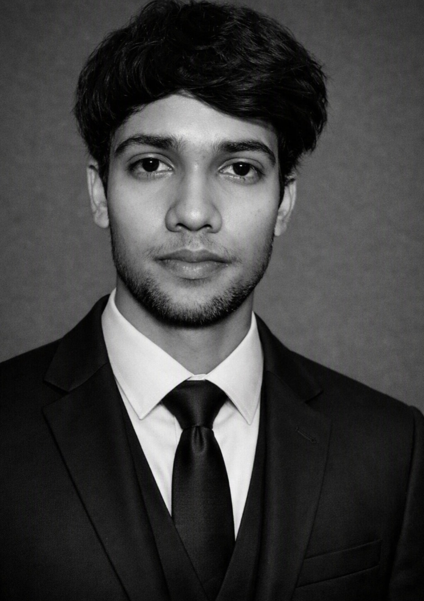

I am a developer, researcher, educator and Senior secondary student. My current work focuses on developing deterministic 3D mesh processing pipelines and mathematical auto-rigging pipeline. I am also working on Developing a biological cycle model to simulate emotional states in different large language models. Apart from this,I owned an open sourced platform for learning complex mathematical concepts using interactive visualizations. Feel free to reach out for discussions or collaborations!